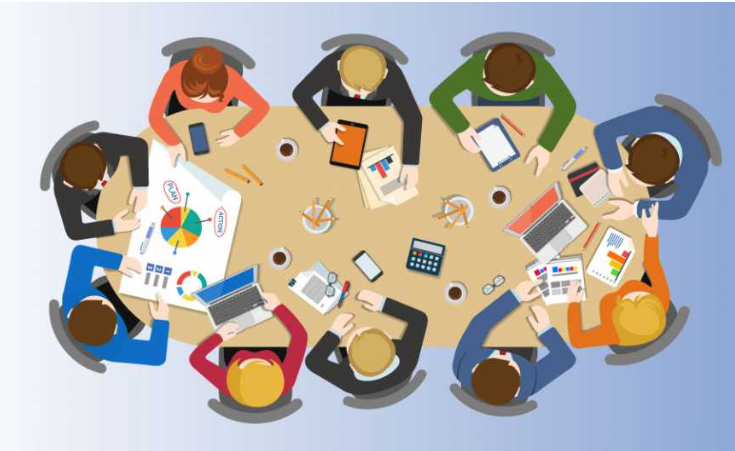

This is the projects page
Projects

Projects have been an important part of my learning journey, allowing me to apply theoretical concepts to real-world situations and gain practical experience. Through various academic and personal projects, I have developed valuable skills in problem-solving, critical thinking, teamwork, and project management. Each project has provided me with an opportunity to explore new technologies, improve my technical abilities, and enhance my understanding of different concepts.Throughout my academic career, I have worked on projects that involve research, design, development, and implementation. These projects have helped me strengthen my analytical skills and gain hands-on experience in planning, coding, testing, and presenting solutions. By working on different challenges, I have learned how to approach problems systematically, identify effective solutions, and continuously improve my work through feedback and evaluation.
In addition to technical knowledge, project development has taught me the importance of communication, collaboration, and time management. Working individually and as part of a team has enabled me to share ideas, learn from others, and successfully achieve project objectives within deadlines. Every project has contributed to my personal and professional growth by enhancing my confidence and preparing me for future opportunities.